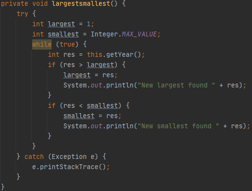
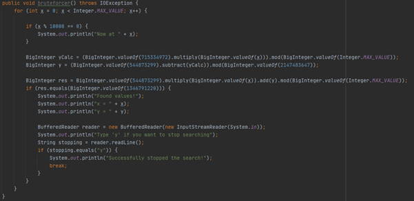
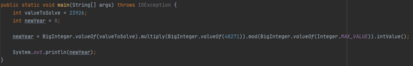
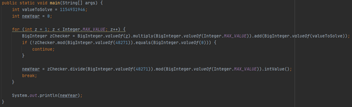
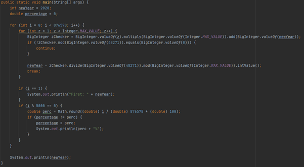
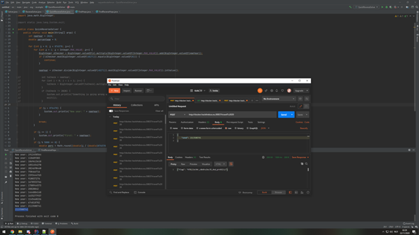

Introduction
Ron (a teacher) came to us asking if we'd like to join the Fontys FHICT team in this HTB CTF. I always love to play CTFs, so I told him I was in. Ron asked me to be the team leader, so I took this role upon me. While doing the CTF, I managed to help several people with their challenges, and I also solved a challenge myself (Buggy Time Machine) with some help of another team member. The writeup of this challenge is found in this document.
Click on the following file to download the whole writeup of all challenges we solved: HackTheBoxCTF2020FontysFHICT.pdf
Buggy Time Machine
After having a look at the Python code they gave us, we found out that the next year is calculated with the following formula:
Next year = (current year * m + c) mod n
We did not have the values m, c and n, so we had to find them on our own. The n should be the highest value possible + 1, so we ran a script (in Java) that gets a lot of years and printed the highest value we found:
After running this for a while, we found that the highest value was almost the maximum integer. We assumed that this would be the n value: 2147483647. Since we have current year and next year two times, we can calculate the m and c. With the following script:
We did the calculation with random values and tested it on another query. That way we found out that the m should be 48271 and the c should be 0. This means that c can be removed from the query to make it a bit easier.
Now we can start with calculating the next year with the following script:
When typing the solution in the request 'predict_year' we get the number of hops returned (876578) and we now know our formula is correct.
Since the TravelTo2020 function requires a seed and not a predicted year, we need to invert this formula. This is very difficult since there is a modulo in this formula. After some thinking and calculating, we found the following formula:
Current year = ((z * n + next year) / m) mod n --> IF (z * n + next year) mod m == 0
In this formula, z is a value that needs to be filled in randomly. This translates into the following piece of code:
Now we need to use this formula to calculate 876578 hops back. Just place above function in a loop for the required amount of hops:
This gives the correct seed. This needs to be returned to the API and then it returns the flag:
HTB{l1n34r_c0n9ru3nc35_4nd_prn91Zz}
